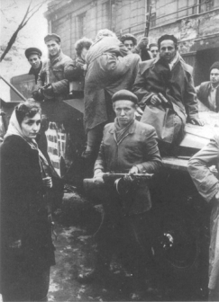

Budapeşte ayaklanmasında Macar sokak savaşçıları, Ekim 1956
1956’da birbirini izleyen iki olay, uluslararası ilişkilerin savaş sonrası modelini değiştirdi. Süveyş krizi, Batı ittifakı için masumiyet döneminin sonunu belirlemiştir; bundan böyle, Batılı müttefikler çıkarların mükemmel simetrisi konusundaki kendi beyanlarına hiçbir zaman tam olarak inanmayacaklardır. Aynı anda Macaristan ayaklanmasının kanlı bir şekilde bastırılması, Sovyetler Birliği’nin kendi nüfuz küresini gerekirse kuvvet kullanarak koruyacağını, kurtarma konuşmalarının boş olduğunu göstermiştir. Görülebilir bir gelecek için Avrupa’yı ikiye bölen çizginin her iki tarafında karşılıklı düşman ordularının bulunmasıyla, Soğuk Savaş’ın hem uzun hem de acı olacağı hakkında hiçbir kuşku kalmamıştır.
Macarların, Sovyet egemenliğine karşı başarısızlığa mahkûm mücadelesi, tarihi Rus emperyalizmi, Sovyet ideolojisi ve ateşli Macar milliyetçiliğinin patlayıcı bir karışımından doğmuştur. Bir anlamda, Macaristan, Büyük Petro zamanından beri devam eden merhametsiz Rus yayılmacılığının bir kurbanıydı. Tarihi olarak Rus devleti, kendi sınırlarındaki devletlerden, gerçekten bağımsız bir politika izlemeye çalışanları baskı altında tutagelmiştir. Rusya’nın bu eğilimi Soğuk Savaş sonrası dönemde de devam etmiştir. Fakat bu, genellikle Rusya’nın problemlerinin bir başlangıcıydı. Rusya, egemenliğini ortadan kaldırdığı komşu ülkelerde, Rusya’nın güvenliğini artırmadan hazinesini zayıflatan maliyeti yüksek askeri kuvveüer bulundurmak zorunda kalmıştır. George Kennan’ın yazdığı gibi, “... Çarlar rejimi, Avrupa’da delice bir iştahla yuttuğu Batı azınlıklarının yarattığı hazımsızlıktan çökmüştür.”{756}
Aynı örnek, komünist yönetiminde de tekrarlanmıştır. Stalin, Birinci Dünya Savaşı sonunda kaybedilen bütün çarlık dönemi topraklarını geri almıştır, Kızıl Ordu tarafından işgal edilen ve Moskova tarafından empoze edilen Sovyet tipi hükümetlerin kontrol ettiği Doğu Avrupa’daki sonradan uydu yörüngesi diye anılan devletleri de bu topraklara eklenmiştir. Çarlar zamanında yeter derecede karışık olan imparatorluk yönetimi, komünistlerin döneminde savunulması güç bir ekonomik sistem empoze etmek suretiyle, buyruğu altındaki halkların yabancı yönetimden nefretini artırarak daha da problemli hale geldi.
Sovyet tipi merkezi planlama sistemi, uzun vadede Sovyetler Birliği’nde bile çekilmez hale geldi; hele uydu yörüngesinde başlangıçtan beri bir felaketti, ikinci Dünya Savaşı’ndan önce Çekoslovakya’daki hayat standardı İsviçre ile kıyaslanabilirdi. Sonradan bütün komünist küresinin karakteristiği olan karanlık ve monoton bir gerilemeye uğradı. Polonya’nın İtalya’nınki kadar büyük bir sanayi altyapısı vardı; fakat kısa zamanda Doğu Avrupa seviyesinde kurumlaşmış bir fakirlik içinde yaşamaya mahkûm oldu. Doğu Almanlar, komünist sistemi, Federal Cumhuriyet’in ekonomik refahını paylaşmaları önündeki tek engel olarak gördüler. Doğu Avrupa’daki her ülke halkı, komünist ideoloji ve Sovyet hegemonyası için refahlarından fedakârlık ettiklerine inanıyordu.
Sovyetler Birliği’nde komünizm, kendisini dahiyane bir fenomen olarak tanıtabilirken, Doğu Avrupa’da bu sistemin zorlama ile empoze edildiğine ve eski ulusal geleneklerin bozulduğuna şüphe yoktu. Polis, medya ve eğitim sistemini tam kontrol altında tutmasına karşın, uydu devletlerdeki komünistler, kendilerini, etrafları çevrilmiş azınlık olarak hissediyorlardı ve öyleydiler de. Lenin, Çar II. Nikola’nın, kendi yöntemlerini komşularına empoze etme politikalarının Bolşeviklerce uygulamasını delilik olarak vasıflandırmıştı. Fakat Stalin öldüğü zaman komünist yönetimle müstebit çar yönetimi arasındaki temel fark, Stalin’in daha acımasız ve ağır elli olmasıydı. Nihai olarak Sovyet politikası, tarihinin ilk dönemlerinde Rusya’yı şaşırtan aynı problemle karşı karşıya gelmiştir: Sovyet devletinin güvenliğini artırmak için komünistleştirilen Doğu Avrupa, Sovyet kaynaklarını kurutmuştur ve stratejik bir ödül olmaktan çıkıp, bir yük haline gelecek kadar fazla dikkat istemektedir.
Stalin, Doğu Avrupa uydularının disiplin altında tutulabilmesinin tek yolunun, bu devletlerin Moskova’nın mutlak ve zora dayanan kontrolü altında olmasına bağlı olduğuna inanmıştı. 1948’de kendi çabaları ile iktidara gelen tek Doğu Avrupa komünist lideri olan Tito, Belgrad’ın Moskova’nın direktiflerinden bağımsız olarak kendi yolunu izleyeceğini belirtti. Stalin, misilleme yapmak için Yugoslavya’yı Kominform’dan attı. Stalin, Yugoslavya’nın çabucak çökeceğini beklerken, eski moda güç dengesi düşünceleriyle ideolojik itirazlarını askıya alan Tito, Batı demokrasilerinin yardımıyla ayakta kalmayı başardı.
Stalin, Tito’nun bağımsızlık gösterisine tepki olarak, disiplini yeniden kurmak için, denenmiş ve doğrulanmış metoduna başvurdu ve bütün uydu yörüngesindeki devletlerde bağımsız düşünme yeteneği olan herkesi darağacına gönderecek göstermelik mahkemeler kurdu. On yıl önceki Moskova temizlik hareketinde olduğu gibi, bu son terörün kurbanlarından belki birkaçı gerçekten muhalefet etmişlerdi. Üstelik hayat boyu komünist olan ve Sovyetler tarafından empoze edilen komünist yönetimin maşası olarak hizmet gören kimselerdi: Çekoslovakya’da Rudolf Slansky, Macaristan’da Laszlo Rajk, Bulgaristan’da Traicho Kostov ve Polonya’da Wladislaw Gomulka (Hayatta kalmayı başaran tek lider). Halklarının Moskova’nın maşası gözüyle baktığı bu adamların ortadan kaldırılması, komünizm prensiplerine hâlâ inanan küçük azınlığa da komünizmin çöküntüsünü gösterdi.
Diktatörün baskı altında tutma metodunu izleyecek kadar kendilerinden emin olmayan Stalin’in yerine geçenler, Sovyet bloku içinde çok sesliliğe izin veremeyecek kadar kendi aralarında parçalanmış durumdaydılar, iki çeşit korku onları sardı: Doğu Avrupa’da baskıya devam etmenin, çok gereksinim duyulan Batı ile ilişkilerin yumuşamasını önleyeceği ve uydu yörüngesinin liberalleşmesine izin vermenin bütün komünist yapının çökmesine sebep olacağı korkusu. (Ancak Batı’nın tepki göstereceği korkusu, onları 1953 Haziran’ında Doğu Almanya’daki bir ayaklanmayı bastırmak için tanklar göndermekten alıkoymadı.) 1955’te, ülkenin liderliği emin bir şekilde komünistlerin ellerinde bulunduğu sürece, Doğu Avrupa milliyetçiliği ile birlikte yaşamaya ve yeni yaklaşımların uygun sembolü olan Tito ile uzlaşma yolunu seçmeye karar verdiler. 1955 Mayıs’ında Kruşçev ve Bulganin, kırılanları tamir için Belgrad’ı ziyaret ettiler. Ancak her reform girişiminde olduğu gibi, liberalleşme çabası sel sularını tutan kapıların açılmasına benzer bir işlev gördü.
1956 Şubat’ında yapılan Yirminci Parti Kongresi’nde Kruşçev’in Stalin’in işlediği cinayetlerden söz eden konuşmasından sonra komünizmin saygınlığı biraz daha azaldı. Tek istisna, kendisini milliyetçilik davasına iyice aşılanmış olan Yugoslavya’ydı. Titoist tehlikenin Sovyetler Birliği için ne anlama geldiğini Stalin’in çok iyi anlamış olduğu, sonradan ortaya çıktı. Uydu ülkelerin liderleri, halkın onayını elde etmek için milliyetçi bazı kimlikler elde etmeleri gerektiği paradoksuyla karşı karşıya kaldılar. Kendilerini Kremlin’in kuklaları değil, Polonyalı, Çek veya Macar komünistleri olarak göstermek zorundaydılar. Kruşçev’in Belgrad’ı ziyaretinden önce, Kremlin’in Doğu Avrupa uydu rejimler üzerindeki kontrolü gittikçe daha sorunlu hale geliyordu.
Bu olaylar olurken, Birleşik Devletler temelde pasif tutumunu korudu. Sınırlandırma politikası, Doğu Avrupa’nın özgürlüğünü zamanın aşındırmasına bırakmayı ve Sovyet kontrolüne cepheden meydan okumamayı emrediyordu. 1952 başkanlık kampanyası esnasında, John Poster Dulles bu politikaya Life dergisinde yayınlanan “Cesaret Politikası” adlı yazıda, çok pasif olduğu gerekçesi ile hücum etti. Dulles, kendilerine “esir uluslar” dediği Doğu Avrupa uluslarının, “özgürlük güçlerinin tarihi lideri olan Birleşik Devletler’in sınırlandırma ve hareketsizlik gibi negatif politikalara kendisini adamış olması dolayısıyla” ümitsizliğe düştüğünü ileri sürüyordu. Kendisi, Birleşik Devletler’in “özgürleşmeyi istediğini ve beklediğini açıkça belirtmesinde”{757} ısrarlı idi.
Ancak uygulamada “kurtarma” ne demekti? Dulles, Sovyetler Birliği’nin her hangi bir ayaklanmayı acımasız bir şekilde bastıracağından hiçbir kuşku duymayacak kadar Sovyet işlerini biliyordu. Dulles bu yazıyı yazdığı zaman henüz Stalin ölmemişti. Bu nedenle Dulles, “bir dizi ayaklanma ve misilleme olaylarının” teşvik edilmesini reddetti. Dulles’ın düşündüğü şey, Tito modeline göre “barışçı bir şekilde Moskova’dan ayrılma” idi ve Amerika bu sürece propaganda ve askeri olmayan önlemlerle yardım edecekti.
Acheson, Moskova ile bağları kopardığı zaman Tito’yu desteklerken Realpolitik’e dayanıyordu; Dulles temelde aynı politikayı izlerken ona, “kurtarma” adı altında evrensel bir idealizm havası verdi. Uygulamada, Dulles’ın kurtarma teorisi Amerika’nın riskini artırmadan, Moskova’nın kazançlarını elinde tutmasının maliyetini arttırma amacına yönelikti. Dulles, Titoizmi teşvik ediyordu, demokrasiyi değil; onun fikirleri ile Acheson’ınki arasındaki fark, hatiplikle ilgili bir nüanstı.
Dulles’ı eleştirenler, ona aslında hiç açıklamadığı bir Doğu Avrupa’yı özgürlüğüne kavuşturmak niyeti atfettiler; ancak Dulles’ın sonradan bu düşünceyi düzeltmekten kaçındığı doğrudur. Dulles “Radio Free Europe” (Hür Avrupa Radyosu) ve “Radio Liberty” (Özgürlük Radyosu) gibi kurumların kurulmasına önayak olan başlıca kimse idi. Bu radyoların esas amacı, ayaklanmayı ateşleyecek hisleri cesaretlendirerek Doğu Avrupa’da özgürlük prensiplerini canlı tutmaktı. “Radio Free Europe”un yaklaşımında hiçbir hilekârlık yoktu. Teorik olarak haberlerinin resmi bir niteliği yoktu, kelimesi kelimesine ve kelimenin militan anlamı ile “kurtuluşu” savunuyordu. Yazık ki, devlet tarafından finanse edilen bu radyoların “özel” veya “resmi” olması ayınım Doğu Avrupa sokak savaşçıları tarafından anlaşılması zor bir ayırımdı.
Batı demokrasileri Süveyş krizi ile uğraşırken, Sovyetler Birliği de kendisini Polonya ve Macaristan gibi iki önemli uydusunun yarattığı dar bir boğaz içinde bulmuştur.
İlk patlayan Polonya oldu. Poznan sanayi şehrinde başlayan isyanlar, kanlı bir şekilde bastırıldı, düzinelerle ölü ve yüzlerce yaralıyla sonu alındı. Ekimde, önceki yıllarda Stalin temizliğinden kurtulmuş olan Polonya Komünist Partisi Merkez Komitesi üyeleri, Polonya milliyetçiliği davasını savunmaya karar verdiler. 1951’de temizliğe maruz kalan ve gözden düşen Gomulka, Komünist Partisi’nin birinci sekreterliği görevine dönmeye çağrıldı ve ilk Politbüro toplantısına 13 Ekim 1956’da katıldı. Savunma bakanlığına getirilen ve 1949’dan beri Polonya Politbürosu üyesi olan Sovyet Mareşali Konstantin Rokossovski görevinden alındı ve bu suretle Sovyet vasiliğinin en aşağılayıcı sembollerinden birine son verilmiş oldu. Polonya Komünist Partisi, bir tebliğ yayınlayarak Polonya’nın bundan böyle “sosyalizme giden ulusal bir yol” izleyeceğini ilan etti. Polonya’nın ateşli milliyetçi duygularının sosyalizme karşı kayıtsızlığı düşünülürse, bu açıklama Moskova için güven verici olmaktan uzaktı.
Bir an Kremlin askeri müdahale fikrini aklından geçirdi. 19 Ekim’de Kruşçev, Politbüro arkadaşları Kaganoviç, Mikoyan ve Molotov’la birlikte Varşova’ya inerken Sovyet tankları da başlıca şehirlere doğru ilerlemeye başladılar.
Polonyalı liderler gözlerini bile kırpmadılar. Sovyet genel sekreterine, ziyaretinin iki parti arasında bir toplantı olarak değerlendirilmeyeceği ve bu nedenle kendilerinin Komünist Partisi Merkez Komitesi’nin Genel Merkezi’nde kabul edilmeyeceği bildirildi. Sovyet delegasyonundan, devlet misafirlerine ayrılan Belvedere Sarayı’nda kalmaları rica edildi.
Son anda Kruşçev geri çekildi. 20 Ekim’de Sovyet birliklerine üslerine çekilmeleri emri verildi. 22 Ekim’de, Kruşçev yeni liderlerin sosyalist sistemi koruyacakları ve Polonya’nın Varşova Paktı’ndaki üyeliğini devam ettirecekleri vaadine karşılık, Gomulka’nın Komünist Partisi genel sekreterliğini onayladı. Resmi olarak Sovyet savunma sistemi dokunulmamış olarak kaldı. Ancak Batı ile herhangi bir savaşta, Polonya birliklerinin güvenilirliği, artık kayıtsız şartsız değildi.
Sovyetler Birliği geri adım atmış ve ulusal komünizmin Polonya’da egemen olmasına izin vermişti. Çünkü bu hareketi bastırmak, tarihi Rus baskısı ve Sovyet gaddarlıklarına karşı gösterilen direnme ile cesaretini ve dövüşme azmini kanıtlamış olan 30 milyon insanla baş etmek demekti. Fakat daha önemlisi, Kremlin aynı anda daha ciddi bir şekilde Macaristan’da bir testten geçiyordu.
Dokuz milyonluk bu ülke de komşuları gibi aynı Sovyet baskısı döngüsünü yaşamıştı. 1940’lardan beri katı Stalinci olan acımasız Matyas Rakosi tarafından yönetiliyordu. 1930’lu yıllarda, Stalin onu, 1849’da çar ordusu tarafından ele geçirilen Macar sancaklarını fidye olarak vermek suretiyle Budapeşte’deki hapisten kurtarmıştı. Birçok Macar bu alışverişten sonradan çok pişmanlık duydu; çünkü Rakosi, Kızıl Ordu ile birlikte dönünce öyle bir baskı sistemi kurdu ki, Stalinist standartlara göre bile çok katıydı.
1953 Berlin ayaklanmasından hemen sonra Rakosi’nin zamanı da artık dolmuştu. Moskova’ya çağrılarak, kendisine Beria tarafından acımasız Stalinist biçimde, Macaristan’ın şimdiye kadar değişik milliyetteki liderlerce yönetildiği, fakat hiçbir zaman Yahudi bir kral tarafından yönetilmediği ve Sovyet liderliğinin buna izin vermeyeceği söylendi.{758} Yerine, reformcu bir komünist olarak tanınan İmre Nagy getirildi. Tesadüfe bakın ki, o da bir Yahudi idi; fakat daha az diktatörce metotlar kullandı, iki yıl sonra, Moskova’da Georgi Malenkov devrilince Nagy de görevden alındı ve Rakosi başbakan olarak geri döndü. Tekrar katı komünist prensipler empoze edilmeye başladı. Sanatçılar ve entelektüeller baskı altında tutuluyordu. Nagy, Komünist Parti’den ihraç edildi.
Ancak Stalin’in yerine geçenler onun ölümcül tek amaçlılığına sahip değildiler. Nagy’nin hayatta kalmasına izin verilmekle kalınmadı, aynı zamanda onun, Sovyetler Birliği’nin komünist devletlerin iç işlerine karışması hakkına meydan okuyan bir kitap yayınlamasına da müsaade edildi. Bu sırada, iktidarda ikinci dönemini sürdüren Rakosi, halkının istek ve beklentilerine karşı birinci iktidar dönemindekinden daha fazla reaksiyon göstermek eğiliminde olmadığım gösterdi. Yirminci Parti Kongresi’nde Kruşçev’in Stalin’i suçlamasından sonra, Rakosi tekrar görevden alındı ve yerine bu kez yakın iş arkadaşı Emo Gero getirildi.
Her ne kadar Gero, kendini milliyetçi ilan etmiş ise de Rakosi ile o kadar uzun müddet çalışmıştı ki, ülkeyi kaplayan milliyetçi akıma göğüs geremedi. 23 Ekim’de, Gomulka’nın resmen iktidara dönüşünün ertesi günü Budapeşte’de halk galeyana geldi. Öğrenciler bir istekler listesi hazırladılar. Bu istekler, Polonya’da yapılmış reformların çok ilerisindeydi; konuşma özgürlüğü, Rakosi ve arkadaşlarının yargılanması, Sovyet birliklerinin ülkeyi terk etmesi ve Nagy’nin iktidara geri getirilmesi isteniyordu. Nagy, Parlamento Meydanı’nda çok büyük bir kalabalığın karşısına çıktığı zaman hâlâ reformcu bir komünistti ve programı komünist sisteme bazı demokratik yöntemler sokulmasıydı. Düş kırıklığına uğramış kalabalığa, Komünist Partisi’nin gereksinim duyulan reformları yapacağına inanmalarını istedi.
Fakat Macar halkından, nefret edilen Komünist Partisi’nin kendi aşırılarını düzeltmesine güvenmesini istemek için artık çok geçti. Bundan sonra olanlar, başrol oyuncusunun istemeden ve hatta ne olduğunu da iyice anlamadan bir misyonu üstlenmeye zorlandığı ve kendi seçmediği bu misyonun onun da kaderi olduğu bir film gibi gelişti. Reformist olmakla beraber bütün hayatı sağlam bir komünist olarak geçmiş bir insan olan Nagy, ayaklanma sırasında Gomulka’nın Polonya’da yaptığı gibi Komünist Partisi’ni kurtarmaya kararlı görünüyordu. Fakat günler geçtikçe, halkının ihtiraslı arzuları onu Tocqueville’in yüzyıl önce ortaya koyduğu gerçeğin yaşayan bir sembolüne dönüştürdü:
“...deneyimler gösteriyor ki, kötü bir hükümet için en tehlikeli an, kendisini reforme etmeye başladığı andır. Uzun bir baskı rejiminden sonra tebaasına biraz nefes aldırmaya girişen bir prens, ancak büyük bir beceri ile kendisini kurtarabilir. Kaçınılmaz olarak kabul edilen, sabırla katlanılan acılar, bundan bir kaçış yolunun mevcut olduğu görüldüğü an, artık katlanılamaz olur. O zaman reform, halen mevcut olan baskıyı, onu daha da dayanılmaz yapan açık bir şekilde gözler önüne serer.”{759}
Nagy, kendisine geç gelen demokrasi düşüncesini hayatı ile ödeyecekti. Sovyetler, ihtilali ezdikten sonra, ona sözünü geri almak fırsatı tanıdılar. Bunu reddetmesi ve onu izleyen idamı, ona Doğu Avrupa’da özgürlük uğruna şehit olanların tapınağında bir yer sağlamış oldu.
24 Ekim’de, halkın gösterileri tam bir ihtilale dönüştü. Aceleyle kavgaya dalan Sovyet tankları yakıldı ve hükümet binaları ele geçirildi. Aynı gün, Nagy başbakan olarak atandı ve Sovyet Politbürosu’nun iki üyesi, Mikoyan ve Suslov, durum değerlendirmesi yapmak için Macaristan’a geldiler. 28 Ekim’de, Sovyet konuklar Kruşçev’in Varşova’da yaptığına benzer bir anlaşmaya vardılar. Titoist bir Macaristan üzerinde uzlaştılar. Sovyet tankları Budapeşte’den çekilmeye başladı. Fakat bu hareket bile, Polonya’da olduğu gibi olayları yatıştırmadı. Göstericiler şimdi, bir çok partili sistem kurulması, Sovyet birliklerinin Macaristan’dan tamamen çekilmesi ve Macaristan’ın Varşova Paktı’ndan çıkmasından daha azını istemiyorlardı.
Bu olaylar olurken, Amerikan politikası göze çarpacak bir şekilde ihtiyatlı kaldı. Bütün “kurtuluş” konuşmalarına rağmen, Washington açıkça bu kadar temelden bir patlama beklemiyordu. Amerika hem bu sürece elinden geldiği kadar yardım etmek istiyor, hem de çok ileri giderse Sovyetlerin eline müdahale için bir bahane vermekten korkuyordu. Hepsinden önemlisi, Washington iki önemli krizi aynı anda idare etmekten aciz olduğunu gösterdi. Macar öğrencileri ve işçileri Sovyet tankları ile sokaklarda çarpışırken, Washington sessizliğini koruyordu. Moskova’ya, kuvvet kullanma veya kuvvet kullanma tehdidinin Washington’la olan ilişkilerini tehlikeye düşüreceği yolunda hiçbir uyarı yapılmadı.
Birleşik Devletler, 27 Ekim’de Güvenlik Konseyi’ne “Macaristan’daki yabancı askeri kuvvetlerin hareketinin yarattığı durum”{760} hakkında başvuruda bulundu. Ancak başvuru o kadar gevşek bir şekilde ele alındı ki, 4 Kasım’a kadar Güvenlik Konseyi kararı oylanamadı; zaten o zamana kadar da Sovyet müdahalesi yapılmış bitmişti.
Aradaki boşluk “Radis Free Europe” tarafından dolduruldu. Radyo, Macarları ihtilallerini hızlandırmaya ve herhangi bir ödün vermemeye teşvik etme ve Amerikan tavrını açıklama işini üzerine aldı. Örneğin, 29 Ekim’de “Rario Free Europe”, Imre Nagy’nin yeniden başbakanlığa getirilmesini şu düşmanca yayınla selamladı:
“Imre Nagy ve destekleyicileri, Truva Atı bölümünü gözden geçirmek ve modernize etmek istiyorlar. Budapeşte’deki mevcut iktidarın mümkün olduğu kadar uzun müddet pozisyonunu korumak için ateşkese ihtiyacı var. Özgürlük için savaşanlar, onlara muhalif olan hükümetin planlarını bir saniye için bile olsa gözden uzak tutmamalıdır.”{761}
30 Ekim’de, Nagy tek partili sistemi ortadan kaldırdı ve son hür seçim olan 1946 seçimlerine katılan bütün demokratik partilerin katılımı ile oluşan bir koalisyon hükümetini atadı; fakat “Radio Free Europe” hâlâ ikna olmamıştı:
“Savunma ve içişleri bakanlıkları hâlâ komünistlerin ellerindedir. Özgürlük savaşçıları, bunun devamına müsaade etmeyin. Silahlarınızı duvara asmayın. “{762}
Her ne kadar “Radio Free Europe” Amerikan hükümeti tarafından finanse ediliyorsa da, hükümetten resmi bir direktif almayan bağımsız bir heyet ve yöneticiler tarafından yönetiliyordu. Ancak Macaristan’ın özgürlük savaşçılarından, Birleşik Devletler hükümeti ile “kurtuluş” politikasını duyurmak için kurulmuş olduğu açıklanan ve dışişleri bakanının kendi icadı olduğunu iddia ettiği politikanın aracı olan radyo istasyonunun yayınları arasındaki farkı kavramalarını istemek, onlardan çok şey istemekti.
Eisenhower Yönetimi, konuştuğu birkaç seferde de her şeyden çok Sovyetlere güvence vermeğe çalıştı. Kasıtlı olmamakla beraber, hükümetin açıklamaları da aşağı yukarı “Radio Free Europe” kadar tahrik edici nitelikteydi. 27 Ekim’de, Sovyet birlikleri Macar başkentinden çekilmekteyken, Dulles, Dallas’ta, Birleşik Devletler’in Macaristan’ı, Moskova farkına varmadan Sovyet yörüngesinden çıkarmak istiyormuş izlenimi yaratan bir konuşma yaptı. Dulles, Moskova ile bağları koparan herhangi bir Doğu Avrupa ülkesinin Amerikan yardımına güvenebileceğini söylüyordu. “Bu ülkelerin, herhangi bir özel toplum şeklini kabul etmeleri de” şart değildi. Diğer bir deyişle, Amerikan yardımı hakkının doğması için bir Doğu Avrupa ülkesinin demokratik olmasına da ihtiyaç yoktu; Titoist bir model seçmesi ve Varşova Paktı’nı terk etmesi yeterli idi. Tipik bir Amerikan tarzı açıklamada Dulles, bu yorumu fedakârlık iddiası ile de birleştirdi. Dışişleri bakanına göre, Birleşik Devletler’in “uydu ülkelerin bağımsızlıklarını arzu etmesinde herhangi bir gizli amacı” olmadığı gibi, bu ülkelere “olası birer askeri müttefik”{763} olarak da bakmıyordu.
Gizli bir niyetin olmadığı iddiasını ileri süren Amerikan diplomatik retoriği, güven vermekten uzaktı. Marksist olmayan liderler arasında bile, bu retorik, genellikle tahmin edilemezlik veya keyfi hareket olarak yorumlanmıştır. Her ne ise, bu noktada Moskova, Amerikan niyetlerinden çok, Amerikan hareketlerinden endişeliydi. Sekiz yıl önce, Moskova, Doğu Avrupa’nın Marshall Planı’na katılmasını veto etmişti; çünkü Amerikan ekonomik yardımını, bir çeşit kapitalist tuzak olarak algılıyordu. Dulles’ın Varşova Paktı’nı terk edenlere ekonomik yardım önerisinin bu korkuyu tekrar yaratması doğaldı. Dulles’ın, Macaristan’ın askeri ittifakta saf değiştirmesi isteğinin, Amerika’nın kendisini tutması ile önlendiği yolundaki üstü kapalı sözleri ise, politik depremi daha da yakınlaştırdı.
Dulles’ın, Sovyetlere tahrik edici güvence vermesi şeklindeki tutumuna paralel olarak, Eisenhower de 31 Ekim’de, Sovyetler Birliği’ne, tekrar baskıya başvurursa ceza önlemleri ile karşılaşacağı imasında bulunmamasıyla dikkat çekici bir konuşma yaptı. Olasılıkla, Eisenhower uzlaşmacı bir ton kullanmaya ikna edilmişti; çünkü bir gün önce Sovyetler Birliği, belirsiz olmakla beraber, Sovyet birliklerinin Doğu Avrupa’da üslenmesi kriterlerini ilan etmişti. Aynı zamanda Eisenhower, Sovyetlerin yeni kuvvetlerinin, Macaristan’ın geri kalan bölgelerine doğru yaptığı o sıralarda başlayan büyük çapta hareketin de farkında olması gerekirdi. Eisenhower’ın Sovyetler Birliği’ne karşı çekingen davranması, aynı yayında Süveyş krizi dolayısıyla Büyük Britanya ve Fransa’nın maruz kaldığı azarlanma ile kıyaslandığında çok dikkati çekicidir.
Macaristan konusunda, Eisenhower, Birleşik Devletler her ne kadar Doğu Avrupa’da Sovyet hegemonyasının son bulmasını ümit ediyorsa da “kuşkusuz bu politikayı kuvvete başvurarak uygulayamayacağımızı”{764} vurguluyordu. Çünkü böyle bir tutum, “hem Doğu Avrupa halklarının çıkarlarına en iyi şekilde hizmet, hem de Birleşmiş Milletler prensiplerine aykırı olur”du.{765} Bu gerçek, hem “Radio Free Europe” hem de Amerikan yardımını heyecanla bekleyen özgürlük savaşçılarının gözünden kaçmıştı. Eisenhower konuşmasına devam ederek “bu Doğu Avrupa ülkelerinde Amerika’nın olası askeri müttefikler aradığı şeklindeki iddianın yarattığı gerçek dışı korkunun ortadan kaldırılması için” çok çaba harcadı. “Böyle bir gizli amacımız yoktur. Bu insanları dost olarak görüyoruz ve hür olan dostlar olmalarını diliyoruz.”{766}
Amerika’nın gizli niyetler beslemediği yönünde başkan tarafından yapılan açıklama, Kremlin için dışişleri bakanınınkinden daha ikna edici değildi. Dış politikalarını, Marksist ideoloji ve Rus ulusal çıkarlarının karışımı doğrultusunda yürüten Sovyetler, Amerika’nın bencil bir niyet beslemediği açıklamasını bir türlü anlayamıyordu. Fakat kuvvet kullanımının reddedilmesi Politbüro’nun anlayabileceği bir şeydi; çünkü Sovyetler açıkça hazırlandığı gibi, Doğu Avrupa’da kozları paylaşmaya karar verirse, büyük korkuyu ortadan kaldıracaktı.
Eisenhower yönetiminin Macar ayaklanmasının ortasında yaptığı her iki resmi açıklamanın da istenmediği halde kışkırtıcı olması şaşılacak şeydi. Amerika’nın Doğu Avrupa’da müttefik aramadığı yolunda verdiği güvence, sanki Doğu Avrupa ittifak cephesini değiştirme seçeneğine sahipmiş gibi bir izlenim yarattığından, Kremlin’deki liderlerin huzurunu kaçırdı. Amerika’nın kuvvet kullanmayı reddetmesi ise, Kızıl Ordu ayaklanmayı ezdiği takdirde, Amerika’nın tepkisinin ne olacağını merak eden Sovyetleri rahatlatarak krizi ateşledi.
Bu esnada, Budapeşte’deki olaylar reformist politik liderliğin bile kontrolünden çıkmıştı. 30 Ekim’de, ihtilalciler Komünist Partisi’nin Budapeşte’deki binasını ele geçirdiler ve Nagy’nin en yakın iş arkadaşı dâhil, içerideki herkesi öldürdüler. O gün öğleden sonra, Nagy 1945’teki demokratik partiler koalisyonu bazı üzerine oturan yeni hükümetin kurulduğunu açıkladı. Tek partili komünist rejimin son bulduğunu sembolize etmek üzere, burjuva Küçük İş Sahipleri Partisi’nin bir temsilcisi olan Bela Kovacz da kabinedeydi. Birkaç yıl önce, Kovacz vatana ihanetle suçlanmıştı. Buna ek olarak, uzun zamandan beri komünizme muhalefetin sembolü olan Kardinal Mindszenty hapisten çıkarılmıştı ve heyecanlı kalabalıklara hitap etti. Sovyet birliklerinin bütün Macar topraklarından çekilmesini talep eden Nagy, bu konuda Politbüro elçileri Mikoyan ve Suslov ile görüşmelere başladı. Birçok politik parti bürolar açtılar ve gazete veya broşür yayınlamaya başladılar.
Nagy’nin önerisinin görüşülebilir olduğu izlenimi veren Mikoyan ve Suslov, görünüşe göre bundan sonraki konuşmalara hazırlanmak için Moskova’ya döndüler. 31 Ekim akşamı, hem Pravda hem de İzvestia, yoldaş bir komünist ülkede yabancı birliklerin üslenmesinin ev sahibi ülkenin ve bütün Varşova Paktı’nın onayına bağlı olduğu hakkındaki Kremlin’in bir gün önce ilan edilen resmi açıklamasını yayınladı:
“...Varşova Paktı üyesi olan bir devletin birliklerinin, yine antlaşma üyesi olan bir başka ülkenin toprakları üzerinde üslenmesi, bütün üyelerin anlaşması ve bu birliklerin topraklarında üslendiği ülkenin oluru veya talebi ile yapılır. “{767}
Bu sözlere dayanan Eisenhower, 31 Ekim tarihli konuşmasında Sovyet hükümetinin açıklamasını büyük bir iyimserlikle yorumladı: “... Sovyetler Birliği gerçekten açıklanan niyet doğrultusunda hareket ederse, dünya ulusları arasında adalet, güven ve anlayışa doğru atılan en büyük ileri adıma, bizim kuşağımız da tanık olacaktır.”{768}
Washington, Sovyetlerin genel ilke açıklamasındaki iki önemli uyarıyı görmezliğe geldi: Birincisi, birliklerin çekilmesi ile ilgili usul, onların üslenmesindeki aynı prosedüre tabi idi ki, bu prosedür Sovyetler Birliği’ne veto hakkı veriyordu; ikincisi de, özellikle uğursuz bir uyarı ile Macaristan’a hitap eden paragraflarda, Sovyetler Birliği’nin Macaristan’ın “sosyalist başarılarının” terk edilmesine “izin vermeyeceği” ve onları, gerekirse diğer sosyalist ülkelerle birlikte savunacağı bildiriliyordu:
“Macar halk demokrasisinin sosyalist başarılarını savunmak, şu anda işçilerin, köylülerin, entelektüellerin, Macaristan’ın bütün çalışan insanlarının başlıca kutsal görevidir.
Sovyet hükümeti, sosyalist ülkeler halklarının, yabancı ve iç reaksiyoner güçlerin halkın demokratik sisteminin temellerini sarsmalarına izin vermeyeceklerine inancını ifade eder... Onlar, barış ve sosyalizm davasını desteklemek için kardeşçe birliklerini ve sosyalist ülkeler arasındaki karşılıklı yardımı kuvvetlendireceklerdir.”{769}
Kendisine “Macar Halk Demokrasisi” denilen bu devlet, artık bu adı kullanmıyordu ve ne kendisini, ne de sosyalist başarılar dediği şeyleri koruyabilecek durumda değildi. Komünist kadronun ömür boyu üyesi olan Nagy’nin, Sovyet uyarısının ve kendi desteklediği değişikliklerin ne anlama geldiğini anlamaması olası değildi. Ancak Nagy, kendisini halkın kızgınlığı ile komünist müttefiklerinin affetmezliği arasında bulmuş, ne kontrol edebildiği ne de yönlendirebildiği bir akıma kendini kaptırmıştı. Polonyalılara benzemeyen bir şekilde, Macarlar, komünist rejimi özgürleştirmek değil, yok etmek, Sovyetler Birliği ile eşit olmak değil, ondan toptan kopmak istiyorlardı.
Zaten bir koalisyon hükümeti kurmuş olan Nagy, 1 Kasım’da Macaristan’ın tarafsızlığını ilan eden ve Varşova Paktı’ndan çekildiğini bildiren son geri dönülemeyecek adımı attı. Bu da Gomulka’nın Polonya’da giriştiğinin ilerisinde bir şeydi. Nagy, Macar radyosundan ölüm fermanı demek olan aşağıdaki açıklamayı vakur bir tonla yaptı:
“Macar halkına ve tarihine karşı derin sorumluluk içinde olan ve Macar milyonlarının bölünmez iradesini temsil eden Macar ulusal hükümeti, Macar Halk Cumhuriyeti’nin tarafsızlığını ilan eder.
Macar halkı, bağımsızlık, eşitlik ve Birleşmiş Milletler Ana Sözleşmesi ruhuna uygun olarak komşuları Sovyetler Birliği ve bütün dünya halkları ile birlikte gerçek dostluk içinde yaşamayı istiyor. Macar halkı hiçbir güç blokuna katılmadan ulusal ihtilalinin başarılarını geliştirmeyi ve kuvvetlendirmeyi arzu ediyor.”{770}
Nagy, aynı zamanda Birleşmiş Milletler ’den Macaristan’ın tarafsızlığını tanımasını istedi. Fakat başvurusuna hiçbir zaman bir cevap alamadı.
Nagy’nin merhamet uyandırması gereken başvurusu, dünya toplumu üzerinde hiçbir etki yaratmadı. Ne Birleşik Devletler, ne de Avrupalı müttefikleri, Nagy’nin başvurusunun ivedilikle ele alınması konusunda Birleşmiş Milletler’i ikna edecek hiçbir adım atmadılar. Sovyetler Birliği ise, ılımlı hareket etmeyi düşünecek durumda değildi. 4 Kasım sabahı, günlerden beri Macaristan’a akan Sovyet kuvvetleri hiçbir uyan yapmadan vurmaya başladı ve vahşi bir şekilde Macar Devrimi’ni bastırdı. Stalin temizliğinin eski kurbanlarından olup Nagy tarafından Komünist Parti genel sekreterliğine yükseltilen ve birkaç gün önce esrarengiz bir şekilde ortadan kaybolan Yanoş Kadar, Sovyet birlikleri ile beraber yeni komünist hükümeti kurmak için geri döndü. Macar ordusu kumandanı Pal Maleter, Macaristan’daki Sovyet kuvvetleri kumandanı ile Sovyet birliklerinin Macaristan’dan çekilmesini görüşürken tutuklandı. Yugoslav Büyükelçiliğine sığınan ve Yugoslavya’ya gitmesine izin verileceği vaat edilen Nagy, elçilik binasını terk eder etmez tutuklandı. Cardinal Mindszenty, 1971’e kadar kalacağı Amerikan Elçiliği’ne sığındı. Nagy ve Maleter, sonradan idam edildi. Stalin’in ruhu Kremlin’de halâ yaşıyordu.
4 Kasım’a kadar Sovyet yığınağının yapıldığı tüm kritik devreyi Büyük Britanya ve Fransa’yı Süveyş dolayısıyla azarlamakla geçiren Birleşmiş Milletler, sonunda Macaristan’daki trajediye döndü. Sovyetler Birliği’nin çekilmesini isteyen karar tasarısı Sovyet büyükelçisi tarafından derhal veto edildi. Genel Kurul’un özel bir oturumunda oylanan benzer bir karar, Macaristan’ın bağımsızlığını doğruluyor ve Macaristan’a Birleşmiş Milletler gözlemcilerinin gönderilmesini öngörüyordu. Bu, o kader gününün ikinci kararıydı. Genel Kurul, Ortadoğu için bir Birleşmiş Milletler acil durum gücü kurmuştu. Büyük Britanya ve Fransa’nın da konsensüse katılımıyla Ortadoğu kararı oybirliği ile alınmıştı. Macar kararı ise, sekize karşı elli kabul oyuyla alınmıştı, on beş oy da çekimser çıkmıştı. Sovyet bloku karar aleyhine oy kullanırken, Hindistan ve Yugoslavya gibi Bağlantısızlar ve Arap ülkeleri çekimser kaldılar. Ortadoğu kararı uygulandı; Macar kararı ise görmezlikten gelindi.
Macaristan ayaklanmasının acımasız bir şekilde bastırılması sonrasında, daha kuvvetli ve yaratıcı bir Batı diplomasisinin erken davranıp trajediyi önleyip önleyemeyeceği veya yumuşatıp yumuşatamayacağı sorusu ortaya atıldı. Macaristan’daki Sovyet birlikleri, günlerce geniş şekilde taze kuvvetlerle takviye edildiler. Onların saldırısını önlemek demokrasilerin gücü dâhilinde değil miydi? Amerikan hükümetinin kendisi, ilk kurtuluş bayrağını kaldıran devletti. “Radio Free Europe” kanalıyla yaptığı propaganda, Dulles’in 1952 Life dergisindeki yazısında tahmin ettiğinden fazla ümit yaratmıştı. Macaristan patladığı zaman, Budapeşte’deki Amerikan Elçiliği Dışişleri Bakanlığı’na, her gazetecinin bildiği şeyi bildirmiş olmalıydı: Komünist Macaristan’ın politik yapısı çözülüyordu. Charles Bohlen, Llewellyn Thompson, Foy Kohler ve George Kennan gibi birçok Kremlin uzmanına danışmak olanağı varken, Dışişleri Bakanlığı’nın Sovyet askeri müdahale olasılığını düşünmemiş olması inanılacak gibi bir şey değildir. Her ne ise, Eisenhower Yönetimi, Sovyet müdahalesini, onlara pahalıya mal etmek için herhangi bir çaba göstermedi.
Macaristan’daki ayaklanma sırasında, Amerika kendi sözlerini gerçekleştiremedi. Doğu Avrupa’daki komünist kontrolünü devirmek için savaş riskini göze almamak, on yıldan beri açık Amerikan politikası olmuştu. Fakat Washington’un olayları etkileyebilmek için savaş dışında her türlü seçeneği araştırmakta da başarısız olması, Washington’un ilan ettiği ilkeler ile desteklemeye hazır olduğu olaylar arasında çok büyük bir boşluk yaratmıştır. Birleşik Devletler, hiçbir zaman, yeni kurulan deneyimsiz Macaristan hükümetine desteğinin sınırını açıklamamıştı. Aynı zamanda, mevcut birçok kanalı kullanarak Macarlara geri dönülmez adımlar atmadan önce, kazançlarını nasıl sağlamlaştırabilecekleri yönünde de herhangi bir öneride bulunmamıştı. Sovyet liderliği ile yapılan haberleşmelerde de Birleşik Devletler büyük ölçüde resmi açıklamalara dayanıyordu ki, sonradan bunların Eisenhower Yönetimi’nin umduğu sonuçların tamamen zıddını verdiği anlaşıldı.
Daha kararlı ve açık bir Amerikan tutumu, Sovyetlerin müdahale kararını almadan daha çok düşünmesini veya hiç olmazsa sonuçsuz kararlar almamasını sağlayabilirdi. Kremlin’e, Macaristan’da yapılacak bastırmanın önemli politik ve ekonomik bedeli olacağı ve Doğu-Batı ilişkilerinin belli bir müddet dondurulabileceği uyarısı yapılabilirdi. Macaristan konusunda Amerika’nın ve Birleşmiş Milletler’in tutumunun Süveyş’e gösterilen tepkiyle uyumlu olması sağlanabilirdi. Aksine, Amerika ve müttefikleri, bu olayda, sanki sonuçtan hiçbir şekilde etkilenmeyecek seyircilermiş gibi davrandılar.
Demokrasiler, Macaristan için savaşacak durumda değillerdi; fakat yapılan işin politik ve ekonomik bedeli olacağını ortaya koyabilirlerdi. Görüldüğü gibi, Kremlin ekonomik bakımdan bile herhangi bir bedel ödemedi. Macar trajedisinden iki yıldan biraz daha fazla bir zaman sonra ve Berlin konusundaki Sovyet ültimatomuna karşın, İngiliz Başbakan Harold Macmillan, savaştan sonra ilk kez başbakan düzeyinde Moskova’yı ziyaret etti; üç yıl içinde, Eisenhower ve Kruşçev Camp, David ruhunu kutladı.
Süveyş, Arap ulusları ve Hindistan ve Yugoslavya gibi Bağlantısız ülke liderlerinin Büyük Britanya ve Fransa’ya saldırması için bir fırsat yarattı. Oysa sıra Macaristan’a gelince, aynı gruptaki uluslar Sovyet hareketlerini kınama bir yana, Birleşmiş Milletler’de eleştirmeyi bile reddettiler. Birleşmiş Milletler’in Macaristan ve Süveyş oylamaları arasında bazı benzerlikler arzu edilirdi. Hiç olmazsa Amerika’nın Büyük Britanya ve Fransa’ya karşı aldığı önlemler, Bağlantısız ülkeler tarafından Sovyetlerin Macaristan’daki hareketlerine bağlanabilirdi. Sovyetler Birliği’nin Macaristan’da yaptıkları, Bağlantısız ülkeler nezdindeki nüfuzunu olumsuz yönde etkilemediği halde, Birleşik Devletler’in Süveyş konusundaki tutumu da aynı grup nezdinde Amerika’nın nüfuzuna ek bir şey kazandırmadı.
1950’li yıllarda, kendisine Bağlantısızlar grubu denen ülkeler uluslararası ilişkilere yeni bir yaklaşım getirdiler. Kuşkusuz tarafsız ülkeler her zaman var olmuştur; fakat onların belirgin özellikleri pasif bir politika izlemeleri idi. Soğuk Savaş döneminin Bağlantısızları ise, aksine tarafsızlıklarını hiç bir şeye karışmamak şeklinde algılamamışlardır. Kuvvetlerini bir araya toplamak ve nüfuzlarını arttırmak için yaptıkları forumlarda, aktif olarak bazen de hırçınlıkla gündemi oluşturmakta rol almışlar, sonuçta bir Bağlantısızlar ittifakı kurmuşlardır. Her ne kadar uluslararası gerginlik konusundaki yakınmalarında çok gürültü çıkardılarsa da, bu gerginlikten nasıl yararlanacaklarını da çok iyi biliyorlardı. Süper güçleri nasıl birbirlerine karşı kullanacaklarını öğrenmişlerdi. Sovyetler Birliği’nden Amerika’dan korktuklarından daha çok korktukları için, genellikle komünistlerin tarafında yer almışlar ve Birleşik Devletler’e uyguladıktan sıkı moral ilkeleri Sovyetler Birliği’ne uygulamak gereksinimini duymamışlardır.
16 Kasım’da, Başbakan Jawaharhal Nehru, Hint Parlamentosu’na Sovyetlerin Macaristan’da yaptıklarını kınayan Birleşmiş Milletler kararına niçin olumlu oy kullanmadığını kendi tumturaklı mantığı ile açıklamıştır{771}: Olaylar bulanıktı, karar tasarısı uygun şekilde kaleme alınmamıştı ve Birleşmiş Milletler’in gözetiminde serbest bir seçim çağrısı Macaristan’ın ulusal egemenliğinin ihlali demekti.
Olaylar hakkında her şey söylenebilir, fakat bulanık oldukları söylenemez. Hindistan’ın tepkisi, tamamen bir Realpolitik uygulamasıydı. Basitçe, Hindistan uluslararası forumlarda Sovyetlerin desteğinden vazgeçmek istemiyordu; Çin ve Pakistan’a sınır komşusu iken ve Sovyetler Birliği de pek uzakta sayılmazken, uzak bir Avrupa ülkesi için Sovyet gazabını tahrik etmekte ve önemli silah ikmalini gözden çıkarmakta anlam yoktu.
Hindistan, her ne kadar Hint diplomattan kazananı moral erdeme dayalı olarak seçen farklı bir dinleyici kitlesi içinde olduklarını ileri sürebilirlerse de, dış politikayı Oxford Öğrenci Derneği’ndeki bir görüşme olarak algılamıyordu. Hintli liderler İngiliz okullarında yetişmişlerdi ve Amerikan klasiklerini okumuşlardı. Disraeli ve Theodore Roosevelt’in uygulamalarını, Wilson ve Gladstone’un retoriğiyle bir araya getirmişlerdi. Hintlilerin bakış açısına göre, görüşmecileri Hint retoriğinin, Hint uygulamasının rehberi olduğu veya Hint dış politikasının soyut, üstün bir moralite çizgisinde yönlendirildiğini düşünme yanılgısına düşmediği sürece hakim duygu buydu.
18 Aralık’ta, Macar trajedisinden altı hafta sonra, Dulles bir basın toplantısında ayaklanmaya karşı Amerika’nın takındığı tutumun arkasındaki mantığı açıkladı. Şaşılacak bir şekilde, hâlâ Amerika’nın barışçı niyetleri hakkında Sovyetler Birliği’ne güvence vermeye çalışıyordu:
“...Sovyetler Birliği’nin etrafını düşman devletlerden oluşan bir kuşakla çevirmeye ve Fransa tarafından Birinci Dünya Savaşı’ndan sonra geniş çapta geliştirilen ve Sovyetler Birliği’nin etrafını düşman kuvvetlerle çevirme amacı güden bir cordon sanitaire‘i yeniden oluşturmayı arzu etmiyoruz. Bu konudaki politikamızı, uydu ülkelerin gerçek bağımsızlığa doğru barışçı bir evrimini kolaylaştırmak ümidiyle açıklığa kavuşturduk.”{772}
Bu, hayret verici bir açıklamaydı. Sınırlandırma politikası, eğer Sovyetler Birliği’nin etrafını onun yayılmacılığını durdurabilecek kuvvetlerle çevirmek değilse neydi? Sovyetlerin Macaristan’daki acımasız gösterisinden ve Ortadoğu’da tehdit edercesine kılıç şakırdatmasından hemen sonra, Dulles’ın özür diler gibi konuşma tonu aynı derecede şaşılacak bir şeydi 13 Mart 1957’de Dulles, Avusturalya’da yaptığı bir basın toplantısında, Amerika’nın tavrını kabaca özetledi. Meslekten bir avukat olarak, davasını herhangi bir hukuki yükümlülüğün yokluğuna dayandırdı:
“...Macaristan‘a askeri yardım yapmak için bir dayanağımız yoktu. Böyle bir yükümlülüğümüz yoktu ve yardım yaparsak bunun Macaristan halkına veya Avrupa halkına yahut dünyanın geri kalan kısmına herhangi bir yararı olacağını düşünmedik.”{773}
Dulles devamlı olarak esas noktayı gözden kaçırıyordu. Sorun hukuki bir sorun değildi; Amerika’nın yükümlülüğünü yerine getirip getirmemesi sorunu değildi; fakat Amerika’nın beyanlarına sadık kalması sorunu idi.
Evrensel bir misyonu ilan ettikten sonra, Amerika’nın prensipleri ile ulusal çıkarları arasında boşluklarla karşılaşması kaçınılmazdı. Süveyş ve Macaristan olaylarının birbirine karışması bunun bir örneğiydi. Amerikan büyük rüyası, zorlayıcı ve evrensel kurallarıyla önündeki her şeyi sürükleyen bir dış politika olmuştur. Oysa on yıldan beri Amerikan politik karar organları, dünya liderliğinin karmaşıklığı, günlük diplomasi değirmeninin öğüttüğü mükemmel olmayan davalara ödün verilmesi ve çok değişik tarihi perspektifleri olan müttefiklerinin görüşlerine dikkat edilmesi gereği ile engellendiler. Süveyş, bu kusuru düzeltmek ve politikayı prensipleriyle uyumlu duruma getirmek için iyi bir fırsat yarattı. En yakın müttefiklerine sırtını dönmenin verdiği ıstırap, Amerika üzerinde ceza etkisi yaptı ve moral safiyetinin tekrar takdir edilmesine yaradı.
Macaristan, daha karmaşık bir olaydı; çünkü bir şekilde kuvvet kullanımını gerektiriyordu. Ancak Amerikalı liderler, vicdani bakımdan rahat değillerse de Amerikan güvenliğini doğrudan doğruya etkilemeyen böyle bir dava için Amerikan hayatlarını tehlikeye atmak istemiyorlardı, İlke, belirsizliğe ve basamaklara izin vermez. Süveyş’te Amerika ilkelerinin uygulanmasında ısrar edebilirdi; çünkü sonuçları hemen bir savaş riski getirmiyordu. Macaristan’da ise, diğer ülkelerin kabul ettiği gibi Realpolitik’i kabul etti; çünkü prensipte ısrar, kaçınılmaz şekilde bir savaş, belki de bir nükleer savaş tehlikesini yaratacaktı. Hayatlar söz konusu olduğu zaman, devlet adamları, ne kadar genişlikle ve cömertçe tanımlanırsa tanımlansın, risk ile çıkar arasındaki ilişkiyi halkına ve kendisine açıklamak zorundadır. Sovyetler Birliği, Doğu Avrupa’da durumunu korumak için, Birleşik Devletler’in Macaristan’ı kurtarmak için göze aldıklarından daha büyük riskleri göze almaya hazırdı. Kimse bu denklemi tersine çeviremezdi. Ayaklanmadan önceki retorik kapsamında Amerika’nın Macar politikası gerçekten zayıftı; çıkar terimleri içinde ise, savaş tehlikesini göze almanın reddedilmesi hem kaçınılmazdı, hem de uygundu. Ancak Amerika’nın tutumu, askeri olmayan yöntemlerle Sovyetlere Macaristan’a yaptıktan tecavüzün bedelinin fazlasıyla ödettirilmesindeki isteksizliğini açıklamıyor.
Macaristan ve Süveyş olaylarının aynı zamanda gerçekleşmesi, Soğuk Savaş’ın bundan sonraki aşamasının koordinatlarını belirledi. Sovyetler Birliği, Doğu Avrupa’daki durumunu korumayı başardı; Birleşik Devletler dâhil, demokrasiler Ortadoğu’daki durumlarında göreceli bir gerileme kaydettiler. Sovyetler Birliği, sınırlandırma politikasını atlamanın bir yolunu buldu. Birliklerinin Budapeşte’yi vurduğu günden bir gün sonra ve çatışmalar hâlâ devam ederken, Kruşçev Batı Avrupa’yı roket saldırıları ile tehdit ediyor ve hatta Birleşik Devletler’i Ortadoğu’da en yakın müttefiklerine karşı ortak askeri harekât yapmaya davet ediyordu. Birleşik Devletler, Macaristan’ı tarihi evrim denizine ve müttefiklerini de iktidarsızlık duygusuna terk etti.
O zaman belirgin olmayan şey, Sovyetler Birliği’nin doğal zayıflığı idi. Şaşılacak bir şekilde, komünistler devam ettiremeyecekleri bir girişimde bulunmuşlardı.
Komünist liderler gönüllerini hoşnut etmek için objektif faktörler hakkında ateşli nutuklar çekebilirlerdi; fakat kalkınmış ülkelerde devrimin sadece komünist dünyasında olduğu gerçeği ortadaydı. Uzun vadede, Sovyetler Birliği etrafında Fin tipi devletler kursaydı, hem daha fazla güvende olacak, hem de ekonomik bakımdan daha da kuvvetli olacaktı; çünkü bu ülkelerin iç istikrarı ve ekonomik gelişmesi sorumluluğunu üstlenmemiş olacaktı. Aksine, Doğu Avrupa’daki emperyalizm, Sovyetler Birliği’nin kuvvetini arttırmadan, Sovyet kaynaklarını tüketti ve demokrasileri ürküttü. Komünizm, hükümet ve medyadaki kontrolünü hiçbir zaman halkın kabulüne ve onayına çeviremedi. Doğu Avrupa’daki komünist liderler, devamlı olarak Sovyet süngüleri üzerinde oturmak istemiyorsa, er veya geç, ulusal muhaliflerinin programlarını kabul etmek zorunda kalacaklardı. Böylece, ilk kanlı terör döneminden sonra, Kadar adım adım Nagy’nin planladığı amaçlara doğru yöneldi; fakat Varşova Paktı’ndan çıkmak adımını atmadı. Bir kuşak sonra, o zamana kadar belirti göstermeyen Sovyet zayıflığı, Macar ayaklanmasının komünist sistemin nihai iflâsının habercisi olduğu işaretini verecekti. Bütün bu olanlara karşın, on yıl içinde Macaristan içişleri bakımından Polonya’dan daha özgür ve dış politikası Sovyetler Birliği’nden daha bağımsızdı. Otuz beş yıl sonraki Moskova’nın özgürleşme hareketinin son safhasında ise, Sovyetler Birliği artık olaylar üzerindeki kontrolünü tamamen kaybedecekti.
1956’nın sonucu, bir kuşak daha ıstırap ve baskı altına alınmıştır. Tarihçilere göre nihai çöküşten önceki ara, kısa olmakla beraber, sistemin totaliter doğasının sayısız kurbanlara verdiği şiddetli ıstırabı ölçmek mümkün değildir. Bu olayların hemen arkasından, güç dengesini kapitalistler gibi yanlış okuyan Moskova, durumdan memnun olmak için her sebebin mevcut olduğunu sandı. Yılın olaylarını, güç dengesinin kendi lehine geliştiği şeklinde yorumlayan Politbüro, Soğuk Savaş döneminin en vahim meydan okumasını başlattı: Berlin ültimatomları.